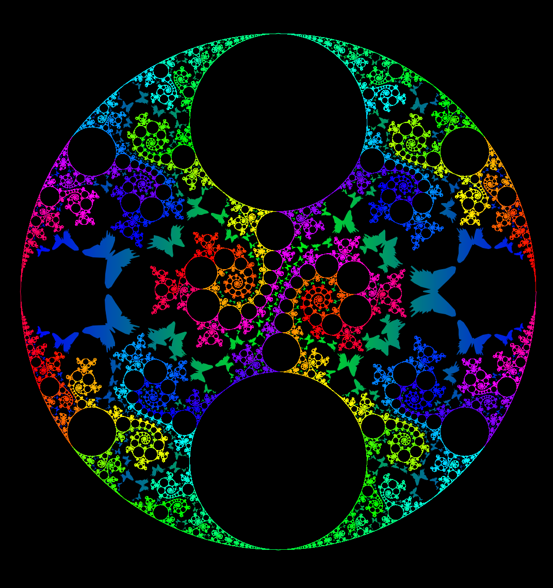
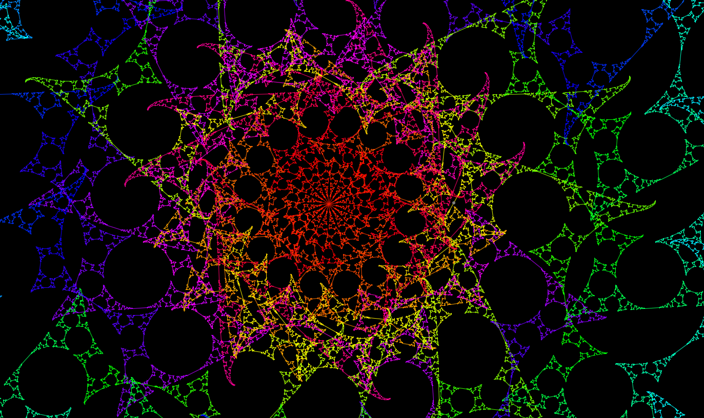
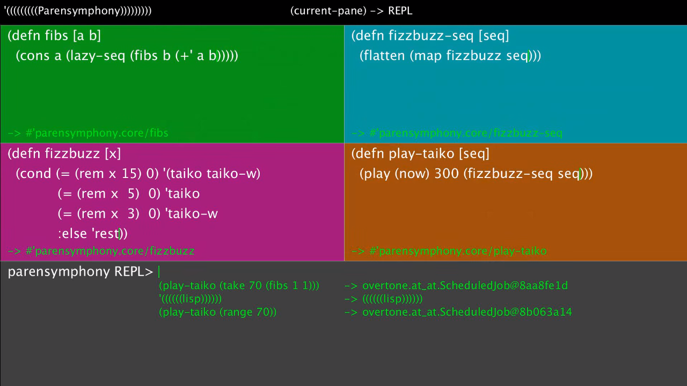
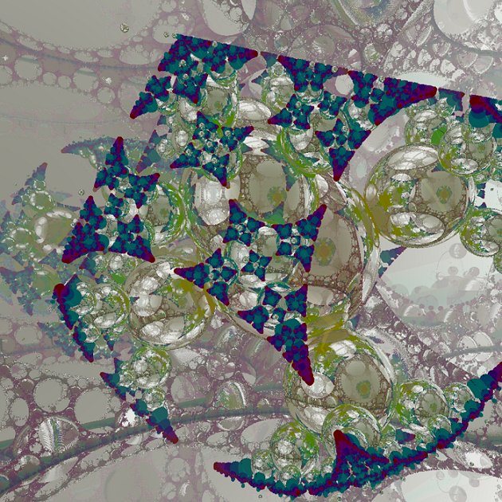
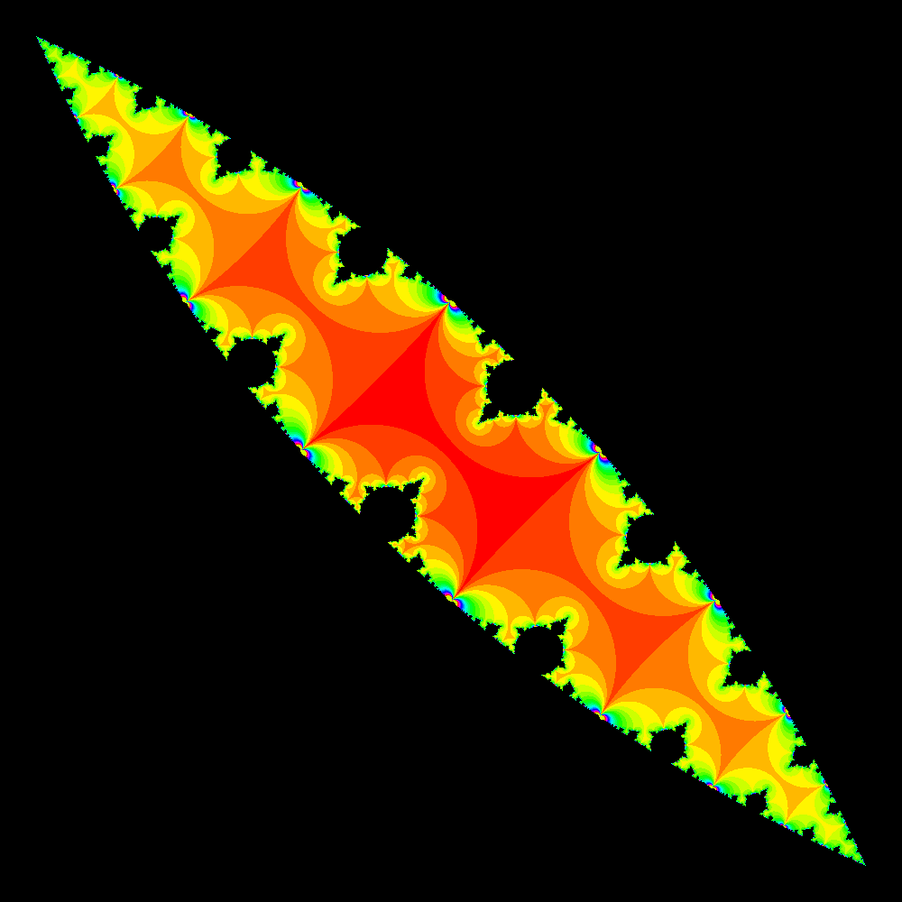
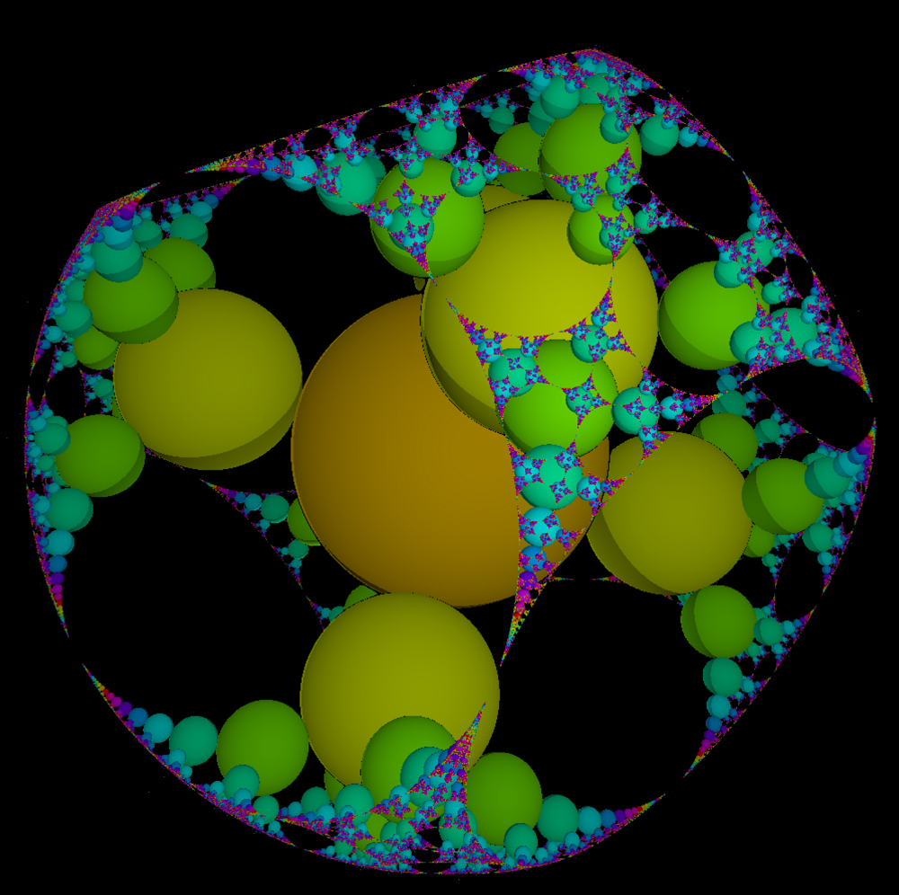

I'm developing software about Fractal and Kleinian groups. Visualized Kleinian groups has fractal structure and it is very beautiful. Many people have been fascinated by it. There already have been software about them. However, many of these are legacy, not well documented, or not published themselves. One of the my purpose is to summarize existing works and re-implement them.
Nakano, Tokyo
Some projects are not considered public use, so please wait for completion.
Software drawing orbit of transformed figures and the limit set of Kleinian groups. It is inspired by bugman123.

You will learn and draw Kleinian groups on web. It will be published at rosarium.website
Audio visual performance software about Kleinian groups. This software is developed for BSOD 2.0, experimental event for visual performance.

Live coding environment for audio visual performance using lisp (Clojure).

Demo using Iterated Inversion System.
2nd place at Tokyo Demo Fest 2016 GLSL Graphics Compo.

An algorithm for rendering kissing Schottky groups developed with Kazushi Ahara (Meiji University).

